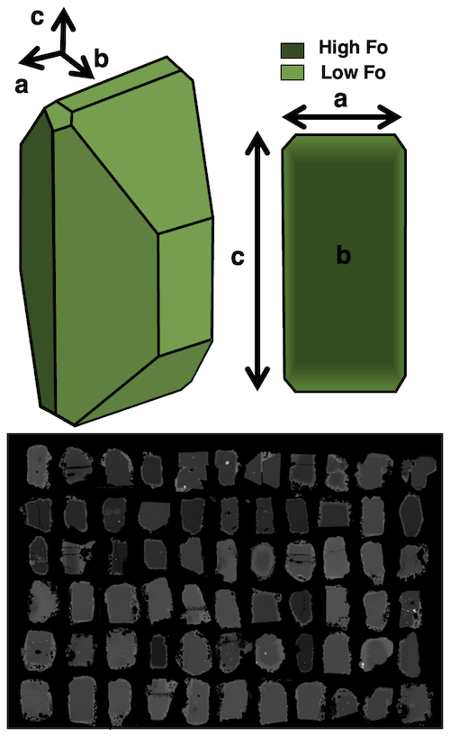
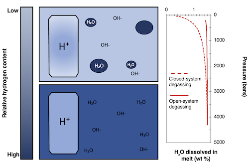

My research leverages micron-scale features in minerals to decode macro-scale processes--from the lithosphere through the troposphere! By integrating advanced analytical techniques (e.g. EPMA, LA-ICP-MS, XANES), statistical analyses, and numerical models, I address pressing questions about the formation, distribution, and behavior of elements in ore forming and magmatic systems.
Some of the key questions driving my work include:
How are critical elements distributed between mineral phases in econmic deposits?
Can we improve analytical accuracy and precision when measuring elements in ore-grade materials?
Where are magmas stored in the crust, and how long do they reside there prior to eruptions?
How fast do they ascend to the surface?
How do magmatic volatile concentrations at depth relate to gasses emitted at the surface, and how do degassing processes concentrate critical elements?
I am particularly drawn to research at intersection of geochemistry, big data analytics, and geospatial analysis, and am always keen on exploring new directions in geochemistry. If you'd like to collaborate or discuss potential opportunities, please get in touch!
Research
Improving analytical accuracy and precision for critical mineral measurements
With high concentrations of REEs, Li, or PGEs outside of the calibration datasets of most spectroscopic approaches, accurately quantifying concentrations of elements in ore minerals is challenging.
One way to improve analytical performance is through developing custom calibrations from materials of known composition. Through holistically characterizing materials, I am looking to lower uncertainties associated
with geocchemical materials characterization.
Investigating magma sources, crustal storage, and degassing using melt inclusions
Melt inclusions–tiny blebs of liquid entrapped in crystals–can provide insightful snapshots of the chemical and physical conditions of magma bodies at depth. These micrometer-scale features can retain signatures of magmatic volatiles (H2O, CO2, S, etc.), which can inform our understanding of melt sources, total volatile budgets, and degassing processes. We can use the concentration of volatiles in melt inclusions to estimate the pressure, and subsequently, depth at which inclusions are entrapped, providing insights into magma plumbing systems.
For my dissertation research, I studied melt inclusions from tephras erupted along the flanks of Nyiragongo and Nyamulagira, two highly active volcanoes in the East African Rift System (EARS). These volcanoes produce some of the most volatile-rich magmas on earth, but little is known about how they form. By measuring the volatile, major element, trace element, and isotopic characteristics of inclusions, we made constrained potential sources of magmatic volatiles, storage depths, and degassing behavior of magmas here.

Estimating magma storage timescales using diffusion in minerals
The chemical composition of minerals crystallizing from magmas depends on a variety of physical conditions, such as temperature, pressure, melt composition, or fO2. If these conditions are perturbed, for example, if a mafic melt intrudes a more evolved melt, minerals will kinetically reequilibrate to the new conditions. By constraining diffusivities of elements in melts, we can capitalize on this process to estimate the timescales between magma perturbations and eruptions.
To understand the timescales between eruptions and their triggers, I measured compositional gradients in olivine phenocrysts in a vatiety of eruptions at Nyiragongo and Nyamulagira. Through numerical models, I estimated the timescales it takes to generate these gradients. As these timescales are often associated with seismic and geodetic signals of unrest at volcanoes, these timescale calculations can contextualize the timescales associated with future eruptions.
Using volatiles in nominally anhydrous minerals to estimate magma decompression rates
Anhydrous minerals, like olivine and clinopyroxene, contain trace amounts of water on the order of tens of ppm. As magmas decompress on their way to the surface, water solubility decreases, leading water concentrations in minerals to reequilibrate with melt concentrations. As with diffusion of major elements in crystals, we can capitalize on this kinetic process to estimate the timescales at which magmas ascend to the surface.
Through measuring hydrogen species in olivine via Fourier-Transform Spectroscopy (FTIR) I investigated the rate of decompression of magmas at Nyiragongo and Nyamulagira.

Apatite as a monitor of magma evolution
Apatite, a calcium phosphate mineral, is a common accessory phase in many volcanic rocks. Its ability to incorporate volatile species in its chemical structure makes it a valuable tool for fingerprinting the volatile components of magmas. With the ability to incorporate sulfur at multiple valence states (S6+ and S2-), the mineral apatite also serves as an excellent probe of magma oxidation state.
For my undergraduate thesis at Lafayette College, I analyzed apatite phenocrysts from Torfajökull Central Volcano, a rhyolitic center along Iceland’s propagating rift. We found that for one eruption, elevated S contents in apatite indicated a shift towards more oxidizing conditions, likely correlating with degassing. To learn more about our work, checkout our AGU Monograph Chapter.
{kind=link}
{kind=link}
{kind=link}